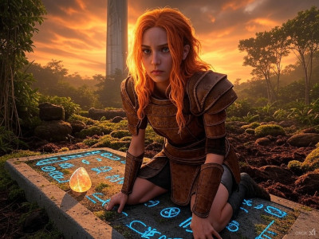
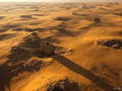
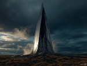
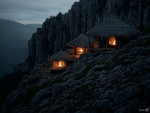
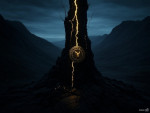
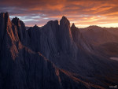
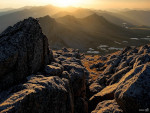

Spire of Dawn
A fractured monolith where Aria’s quest ignites, pulsing
with Elyra’s echo.
Thumb Prompt: "150x100px thumbnail of a
fractured marble spire leaning over a jungle clearing,
choked with venomous vines glistening with dew, azure
glyphs flickering faintly against a dark backdrop
(#1a1a1a), gold cracks (#d4a017) hinting at ancient
power."
Image 1 Prompt: "400x300px image of the Spire
of Dawn’s exterior, a towering ruin piercing a northwest
jungle, marble crown broken, vines curling like serpents
against a dark sky (#1a1a1a), gold glyphs (#d4a017)
glowing faintly on its surface."
Image 2 Prompt: "400x300px image of Elyra’s
mossy grave at the Spire, a stone slab etched with gold
glyphs (#d4a017) reading ‘The blood of the Guardians
will rise again,’ the Heartstone glowing in a jungle
clearing, vines recoiling against a dark haze
(#1a1a1a)."
Image 3 Prompt: "400x300px image of the Cavern
of the Heartstone beneath the Spire, crystal veins
shimmering with gold light (#d4a017), jagged stalactites
dripping mineral tears, Aria’s fiery hair reflecting
against a shadowy void (#1a1a1a)."

Living Jungle
A verdant tangle of life and peril, its roots strangling
secrets.
Thumb Prompt: "150x100px thumbnail of a dense
jungle with kapok trees, crimson orchids blooming in
emerald haze, roots twisting like claws against a dark
backdrop (#1a1a1a), gold dew (#d4a017) glistening
faintly."
Image 1 Prompt: "400x300px image of the Living
Jungle’s canopy, kapok trees towering with gnarled roots
strangling stone, crimson orchids glowing against a dark
haze (#1a1a1a), gold dew (#d4a017) dripping from vines."
Image 2 Prompt: "400x300px image of the Cave of
Flames entrance in the jungle, dry tendrils burning with
gold-flecked sparks (#d4a017), ancient murals of fire on
cracked walls, shadowed by a dark abyss (#1a1a1a)."
Image 3 Prompt: "400x300px image of a jungle
ambush, gruntlings swarming from thorny undergrowth,
their yellow eyes glinting like cursed stars, vines
curling with faint gold sap (#d4a017) against a shadowy
void (#1a1a1a)."

Sunken Sands
A golden sea of despair, where quicksand guards buried
relics.
Thumb Prompt: "150x100px thumbnail of a
shimmering desert expanse, golden sands rippling with
quicksand pits, bones bleaching under a blistering sun,
faint gold glints (#d4a017) against a dark horizon
(#1a1a1a)."
Image 1 Prompt: "400x300px image of the Sunken
Sands’ golden sea, quicksand yawning like graves, bones
protruding from dunes, a searing sun casting gold glints
(#d4a017) against a dark haze (#1a1a1a)."
Image 2 Prompt: "400x300px image of the Water
Gear in the Sands, rusted sluice gates groaning with
gold rust (#d4a017), water trickling faintly through
cracked stone, shadowed by a dark abyss (#1a1a1a)."
Image 3 Prompt: "400x300px image of a golem
rising from the Sands, its molten core glowing gold
(#d4a017), stone fists cratering dunes, dust swirling
against a shadowy void (#1a1a1a)."

Temple of Echoes
A cathedral of wind and mirrors, singing of lost ages.
Thumb Prompt: "150x100px thumbnail of a
mirrored Temple spire, jagged as broken promises, wind
gusts swirling with faint gold dust (#d4a017),
reflecting a dark sky (#1a1a1a)."
Image 1 Prompt: "400x300px image of the Temple
of Echoes’ exterior, a cathedral of mirrors with spires
clawing skyward, wind howling through with gold dust
(#d4a017), set against a dark backdrop (#1a1a1a)."
Image 2 Prompt: "400x300px image of the Echo
Gallery, rusted turbine blades shrieking over a chasm,
mirrors glinting with gold reflections (#d4a017), dust
swirling against a shadowy haze (#1a1a1a)."
Image 3 Prompt: "400x300px image of the Crystal
Spire interior, prisms swaying in a vortex, beams of
gold light (#d4a017) scattered across frosted mirrors,
set against a dark void (#1a1a1a)."

Tribal Enclave
A cliffside refuge trembling under shadow’s choice.
Thumb Prompt: "150x100px thumbnail of cliffside
huts trembling on jagged stone, thatch shivering in
wind, faint gold fires (#d4a017) flickering against a
shadowed sky (#1a1a1a)."
Image 1 Prompt: "400x300px image of the Tribal
Enclave’s cliffs, huts perched precariously with thatch
roofs, gold-flecked fires (#d4a017) glowing faintly, set
against a dark abyss (#1a1a1a)."
Image 2 Prompt: "400x300px image of the Enclave
under attack, casters weaving curses with gold-tinged
shadows (#d4a017), huts crumbling, wind howling against
a dark haze (#1a1a1a)."
Image 3 Prompt: "400x300px image of the Enclave
thriving, huts rebuilt with gold-threaded reeds
(#d4a017), fires steady under a cleansed sky, shadowed
cliffs fading into a dark backdrop (#1a1a1a)."

Abyssal Rift
A festering wound where Umbraeth coils, defying the
seal.
Thumb Prompt: "150x100px thumbnail of a jagged
rift in the valley’s heart, black tendrils pulsing with
corruption, faint gold cracks (#d4a017) on the Seal of
Eternity against a dark void (#1a1a1a)."
Image 1 Prompt: "400x300px image of the Abyssal
Rift’s exterior, a gaping wound with writhing tendrils
glistening black, gold cracks (#d4a017) on the Seal
glowing faintly, set against a sulfur-choked dark haze
(#1a1a1a)."
Image 2 Prompt: "400x300px image of the Warden
of Shadows in the Rift, its crackling gold core
(#d4a017) blazing, stone fists raised, tendrils lashing
against a shadowy abyss (#1a1a1a)."
Image 3 Prompt: "400x300px image of the Rift’s
cleansed interior, the Seal of Eternity glowing with
gold light (#d4a017), corruption shrinking, water
channels shimmering against a dark backdrop (#1a1a1a)."

High Peaks
Jagged cliffs where winds whisper Aria’s trials.
Thumb Prompt: "150x100px thumbnail of jagged
cliffs under a bruised dusk sky, wind gusts swirling
with faint gold dust (#d4a017), set against a dark
backdrop (#1a1a1a)."
Image 1 Prompt: "400x300px image of the High
Peaks’ windswept ledge, jagged stone clawing a dusk sky,
gold dust (#d4a017) swirling in the wind, set against a
dark abyss (#1a1a1a)."
Image 2 Prompt: "400x300px image of a raptor
nest on the Peaks, talons gripping stone, faint gold
feathers (#d4a017) scattered, cliffs looming against a
shadowy haze (#1a1a1a)."
Image 3 Prompt: "400x300px image of Aria atop
the Peaks, her fiery hair blazing, Glyph-Blade glowing
with gold light (#d4a017), wind gusts swirling against a
dark void (#1a1a1a)."

Wind’s Roost
A triumphant perch where victory crowns the valley.
Thumb Prompt: "150x100px thumbnail of a rocky
perch atop High Peaks, dawn’s light casting gold rays
(#d4a017), rivers sparkling below against a dark sky
(#1a1a1a)."
Image 1 Prompt: "400x300px image of Wind’s
Roost at dawn, a rocky perch bathed in gold sunlight
(#d4a017), High Peaks stretching below, wind whispering
against a dark horizon (#1a1a1a)."
Image 2 Prompt: "400x300px image of a mural on
the Roost, Aria’s fiery hair etched with gold lines
(#d4a017) among Ancients, stone gleaming against a
cleansed valley backdrop (#1a1a1a)."
Image 3 Prompt: "400x300px image of cleansed
rivers from the Roost, starlight veins sparkling with
gold reflections (#d4a017), jungles humming below
against a dark void (#1a1a1a)."